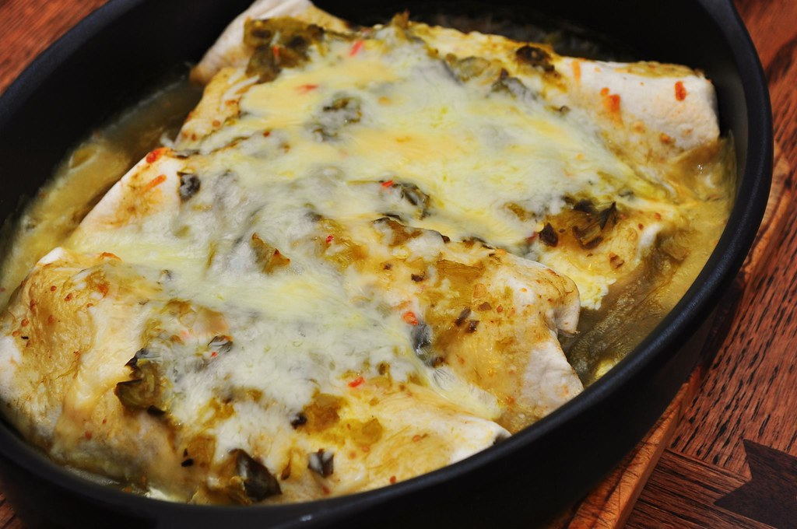

Mexican Green Enchiladas: Savory chicken and cheese filled tortillas
topped with tangy green salsa and melted cheese, perfect for a flavorful
meal.
Mexican Green Enchiladas (Enchiladas Verdes)
Ingredients:
- 10 corn tortillas
- 2 cups cooked shredded chicken (or any filling of your choice)
- 2 cups shreddded Monterey Jack or Oxaca cheese
- 1/2 cup of chooped onion
- 1 clove garlic, minced
- 1 tablesppon olive oil
- 1 (16-ounce) jar green salsa (salsa verde)
- 1/2 cup sour cream
- Salt and pepper to taste
- Fresh cilantro for garnish
Instructions:
- Prepare the Filling:
-
Heat olive oil in a skillet over medium heat. Add chopped onion and
minced garlic, and sauté until softened.
-
Add shredded chicken (or your choice of filling) to the skillet,
season with salt and pepper to taste, and cook until heated through.
- Warm the Tortillas:
- Preheat the oven to 350°F (175°C).
-
Warm the corn tortillas slightly to make them pliable. You can do this
by microwaving them wrapped in a damp paper towel for about 30
seconds, or by briefly heating them in a dry skillet over medium heat.
- Assemble the Enchiladas:
- Spread a spoonful of green salsa on each tortilla.
-
Place a portion of the chicken mixture and a sprinkle of shredded
cheese on each tortilla.
-
Roll up the tortillas and place them seam-side down in a baking dish.
- Add Sauce and Cheese
-
Pour the remaining green salsa over the enchiladas in the baking dish,
spreading it evenly.
- Top with the remaining shredded cheese.
- Bake:
-
Cover the baking dish with foil and bake in the preheated oven for
20-25 minutes, until the enchiladas are heated through and the cheese
is melted and bubbly.
-
Remove the foil for the last 5 minutes of baking to allow the cheese
to become golden and slightly crispy.
- Serve:
-
Remove from the oven and let the enchiladas cool for a few minutes.
-
Drizzle sour cream over the top and garnish with fresh chopped
cilantro.
- Serve hot with rice and beans, if desired.
Enjoy your Meixcan Green Enchiladas!
This recipe is a classic Mexican dish featuring tortillas filled with
savory chicken and cheese, topped with tangy green salsa and melted
cheese. Perfect for a flavorful and comforting meal.